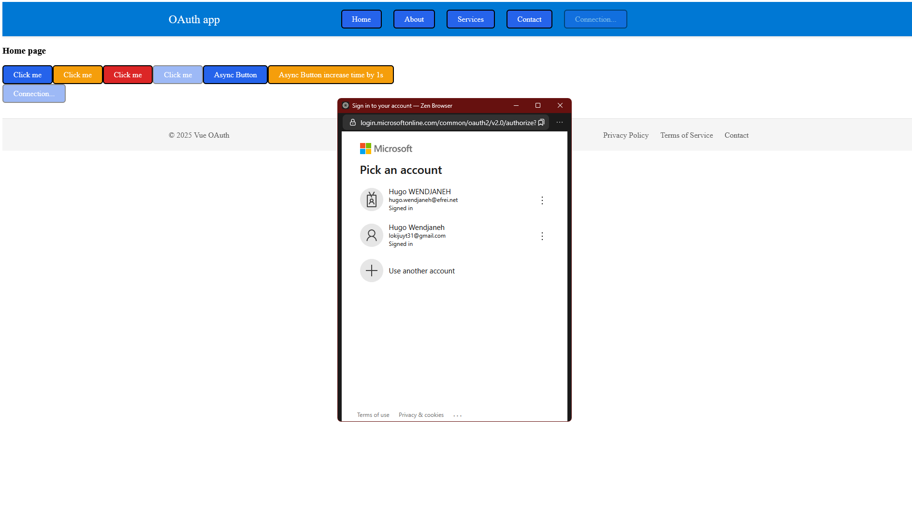
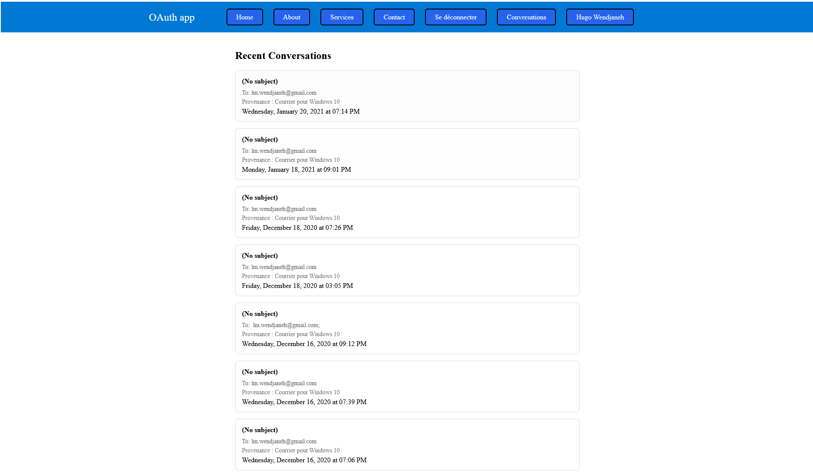
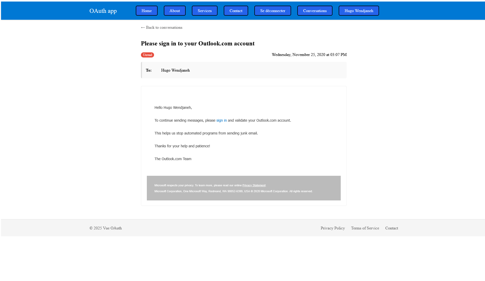

Nom : Hugo Wendjaneh – Fouad Id Gouahmane – Charles Raymondière
Date : 07-03-2025
Sujet : Développement web
VUE_APP_API_URL=http://localhost:3000
VUE_APP_OAUTH_CLIENT_ID=dev-client-id
VUE_DATABASE_URL=http://localhost:8080
VUE_APP_API_URL=https://api.mondomaine.com
VUE_APP_OAUTH_CLIENT_ID=prod-client-id
VUE_DATABASE_URL=https://db.mondomaine.com
VUE_APP_API_URL=https://api.mondomaine.com
VUE_APP_OAUTH_CLIENT_ID=prod-client-id
VUE_DATABASE_URL=https://db.mondomaine.com
provide() injecte une référence statique : si la valeur fournie change, les composants enfants ne sont pas notifiés et ne se rerendent pas.user mis à jour dans le composant parent n’est pas propagé aux consommateurs injectés.reactive({ … }) ou un ref via provide('user', reactive(...)), ou exposer un setter pour déclencher la réactivité.| Stratégie | Avantages | Inconvénients |
|---|---|---|
| Props & Events | – Aucune dépendance externe – Flux de données explicite |
– Prop drilling – Boilerplate – Coupure difficile en profondeur |
| Provide & Inject | – Évite le prop drilling – Très simple à mettre en place |
– Injection peu explicite (moindre lisibilité) – Non réactif si mal utilisé |
| Store (Vuex / Pinia) | – État global centralisé et réactif – Devtools dédiés – Modules / plugins |
– Configuration initiale – Boilerplate pour mutations/actions – Couplage fort à la bibliothèque |
<a href="/conversations">…</a> et <router-link to="/conversations">…</router-link>Lien HTML natif (<a>) |
<router-link> (vue-router) |
|---|---|
| • Full page reload | • Navigation client-side (pas de rechargement complet) |
| • Requête HTTP vers le serveur | • Utilise History API, vue-router gère la route en mémoire |
| • Plus lent et coûteux en ressources | • Très rapide, conserve l’état JS, animations, transition fluide |
| • Moins intégré à l’écosystème SPA | • Permet styles actifs, guards, lazy-loading des composants |



